In the MyRowViews constructor, you are passed the View parameter, which in our lab is the ConstraintLayout root, with an ImageView and two TextView subitems. You can set an onItemClicked() listener for when you click anywhere on the area of the ConstraintLayout area:
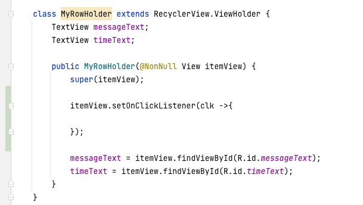
When you click on a row, we'd like to load an alert window asking if you want to delete this row. However you know to know which position you clicked on. In the OnClickListener, use the function getAbsoluteAdapterPosition(), which will tell you which row (position) this row is currently in the adapter object.
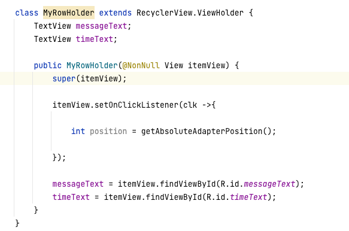
Now the only thing missing is the alert dialog to ask if you want to do this first. Go to the onClick() function you just wrote above:
AlertDialog.Builder builder = new AlertDialog.Builder( ChatRoom.this );
To set the message on the alert window, call
builder.setMessage( );
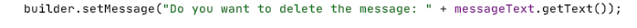
To set the title of the alert dialog, call
builder.setTitle();
The AlertDialog gives you two buttons to use, a positive button, and a negative button. You can set the words of these buttons with the function
builder.setPositiveButton()
and
builder.setNegativeButton():
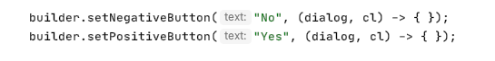
The "Yes" and "No" are the words that will show up on the buttons, and the lambda function is the click handler for what happens if you click on each of those buttons. Clicking on the No shouldn't delete anything so just leave that lambda function empty. For the "Yes" button, we have to remove the message that row, delete it from the database, and update the Adapter object that something's been removed so the RecyclerView can update itself:
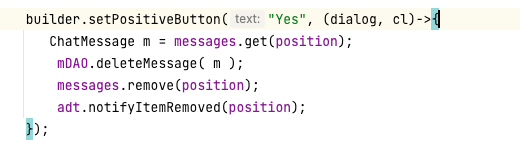
Here, you want to use the adt adapter object from the ChatRoom onCreate function. You'll have to move the variable declaration outside of the onCreate function and put it as a class variable.
The alert dialog is now properly configured with the Title, message, and Yes and No buttons set up. Now we have to actually make the window appear using the functions:
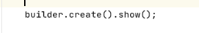
Here we see two functions called on the same line of code. This is called the builder pattern, where the create() function returns an AlertDialog object, which then has the .show() function called on the returned object.
In reality, all of the functions in this build process follow the builder pattern so you can remove all except the first builder object reference:
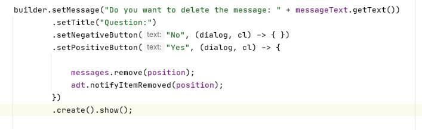
Just remove all of the ";" semicolons between the lines of code but leave the semicolon after calling show(); This means this is all one really long line of code!
Run your program and add a few messages:
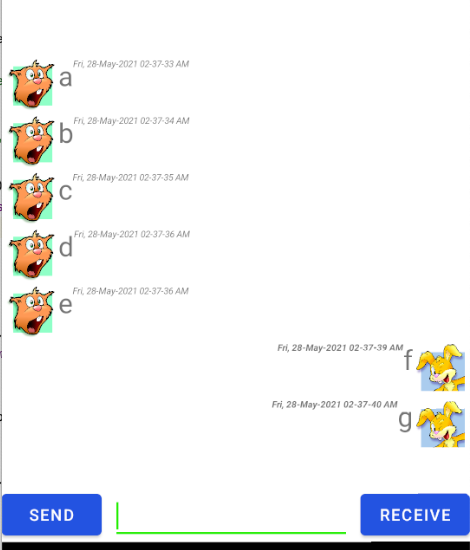
Then click on one of the rows. You're clicking on area contained by the ConstraintLayout. You should see the AlertDialog window:
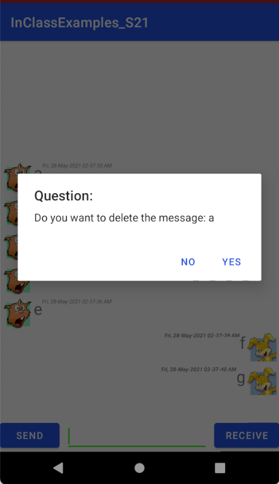
You see the title "Question:, the message "Do you want to delete the message: a", and the "Yes" positive and "No" negative button. You can change these words by changing your strings in the code. Clicking on the "No" button does nothing in your Negative lambda function but clicking on the "Yes" should remove the item from the ArrayList at position, use the ChatMessageDao object to delete from the database, and notify the adapter that the item at position was removed.
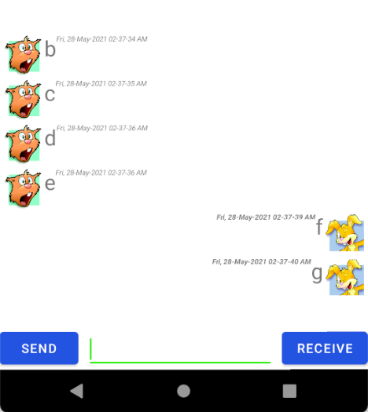
You should see that clicking on the "Yes" button removes the selected row.
A Snackbar is similar to a Toast, in that it can also show a message for a LENGTH_SHORT or LENGTH_LONG amount of time. Like a toast, it needs only 1 line of code:
Snackbar.make(View v, CharSequence text, int duration).show();
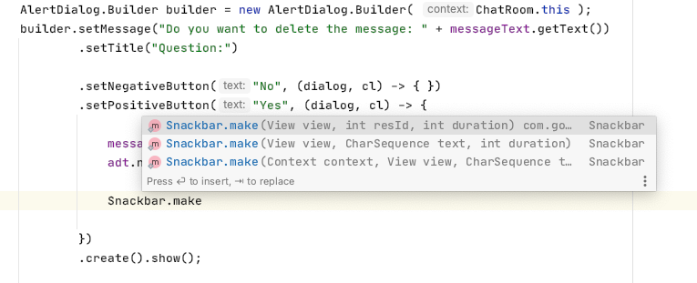
You see this also uses the Builder pattern meaning that .make() returns a Snackbar, and .show() shows it. The View v parameter should be any Widget that is currently on the screen. Since you've clicked on this row, the TextView messageText and timeText from this row should be on the screen now, so you can use either of them. The CharSequence can be any text message: "You deleted message #" + position, and the duration can be either Snackbar.LENGTH_SHORT or Snackbar.LENGTH_LONG:
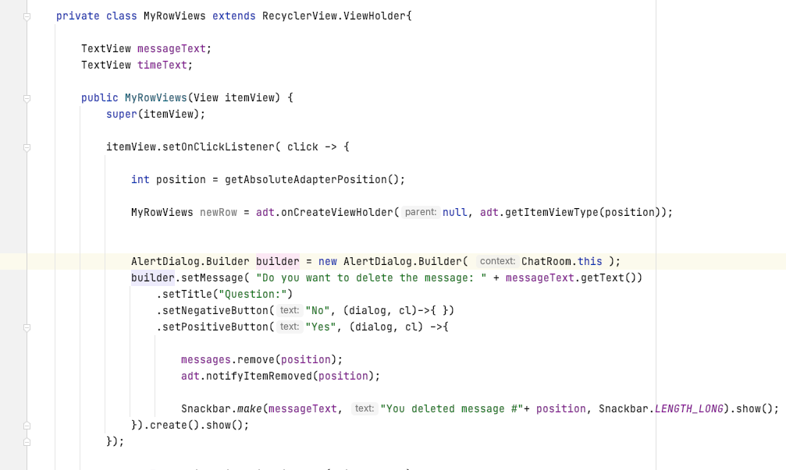
Now when you delete a message by clicking on the Yes button, a little window should pop up from the bottom of your phone:
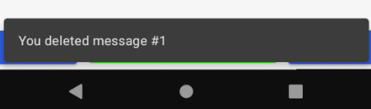
However, a Snackbar has an optional button, like the AlertDialog. On the Snackbar, call setAction() before the .show() function:
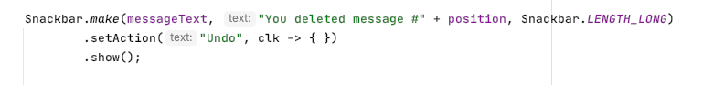
If you run your application again, you will see now there's an Undo button on the Snackbar:
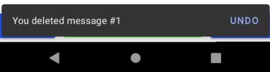
Add some code to the Lambda function so that if you click on the Undo button, you re-insert the message back into the ArrayList, and notify the adapter that something's been inserted:
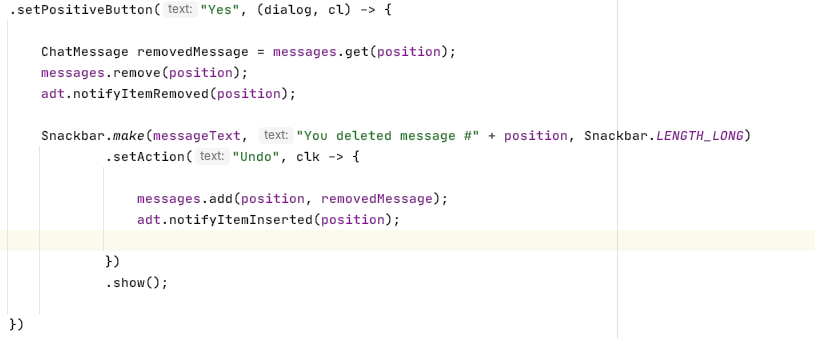
In this code, the variable removedMessage stores the message before it's removed from the ArrayList. That way if you click the "Undo" button, it gets reinserted back into its previous position and the RecyclerView should draw it back in after.
If you play around with it for a bit, you should be able to get it to crash. Imagine this scenario:
Add 5 messages: a, b, c, d, e
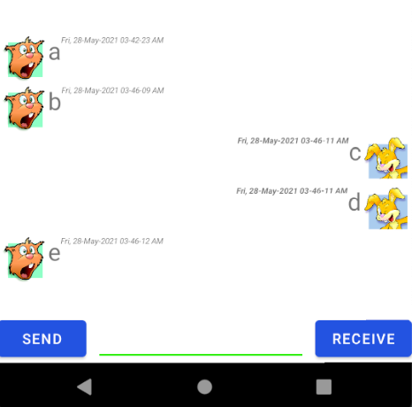
a has position 0
b has position 1
c has position 2
d has position 3
and e has position 4.
Try your code now and you should have something like this:
This is the end of this week's materials. You learned how to use a RecyclerView to make a dynamic list of items. You need a data class, in this case the ChatMessage class that stores the message data. The ViewHolder class stores the TextViews, ImageViews, etc that will show that message data on the screen.
The function onCreateViewHolder() inflates a ViewHolder for that kind of object (Send or Receive type). The function getItemViewType() returns which type of ViewHolder you need for a given row (int position).
The function onBindViewHolder() then passes in the object you returned in the onCreateViewHolder() function, and you then initialize the Views for the item at that position.
The reason that RecyclerView is bettern than ListView is that you don't have to redraw the entire List whenever an item is removed or inserted, as is the case for the ListView. It redraws the whole list when something is inserted or removed. The RecyclerView only updates when you notify that a specific position is inserted or removed. This is much more efficient.
You also learned how to create a new AppCompatActivity from scratch. You create a new class that extends AppCompatActivity, and you then declare the new Activity in the AndroidManifest.xml file. You can also control which activity gets loaded by moving around the <intent-filter> </intent-filter> tags. For now, your Login activity is unreachable but we'll fix that next week.
Lastly, you learned how to use the AlertDialog and Snackbar. Both are tiny windows that pop up over your current Activity, and they have their own built-in buttons that you can use.
Don't forget to commit your code. Before you commit, make sure that there are no red file names in your project view. If there are, right-click on them and select "Git"-> "Add". This adds them to the git tracking list, and they should turn green. Then commit your work and use the commit message "Finished Week 7". Push your code to your github repository and take a screenshot of your branch on github. Submit this picture to Brightspace.
| Item | Marks |
|---|---|
| Selecting a message shows an alert dialog asking if you want to delete the message | (1 mark) |
| Clicking "Yes" or the positive message deletes the message from the list, and also deletes from the database using the ChatRoomDao object. | (1 mark) |
| Deleting a message shows a Snackbar with an UNDO button. Clicking on the UNDO button inserts the message back into the list. | (2 marks) |
| You have the proper annotations for the ChatMessage class (@Entity, @PrimaryKey, @ColumnInfo) | (3 marks) |
| You have the proper DAO class with annotation (@DAO, @Insert, @Query, @Delete) | (1 marks) |
| Adding a ChatMessage also inserts the message into the database | (1 marks) |